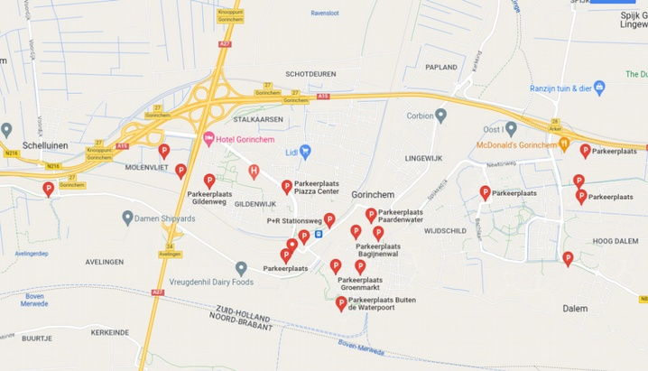

Vanwege het feit dat het naast een vestingstad ook een stad in waarin geleefd wordt zijn de openingstijden afhankelijk van wat je wilt beleven en/of bezoeken. Zoek op mooigorinchem.nl naar bezienswaardigheden die jou interesseren en bekijk de betreffende openingstijden. Kijk zeker naar de leuke mogelijkheden om te combineren.
Gorinchem is makkelijk bereikbaar via de snelwegen A15 en A27. parkeermogelijkheden zijn er voldoende rondom de stad en in de parkeergarages in de vestingstad zelf.
Ook via het openbaar vervoer met bus of trein is Gorinchem goed bereikbaar. Het station ligt aan de rand van de vestingstad. Op loopafstand zit je in het centrum. Informatie op ov9292.nl
Via het water is de vestingstad ook goed bereikbaar te voet of met de fiets vanuit Woudrichem, Sleeuwijk, Werkendam en Hardinxveld-Giessendam. Voor informatie kun je terecht op riveer.nl Een leuk tochtje over het water om daarna direct vanaf de haven de vestingstad te verkennen.
Voor meer informatie kun je ook ter plaatse terecht bij het VVV op adres:
Grote Markt 17
4201 EB GORINCHEM
maandag 12.00 - 17.00 uur
dinsdag 10.00 - 17.00 uur
woensdag 10.00 - 17.00 uur
donderdag 10.00 - 17.00 uur
vrijdag 10.00 - 17.00 uur
zaterdag 10.00 - 17.00 uur
zondag gesloten